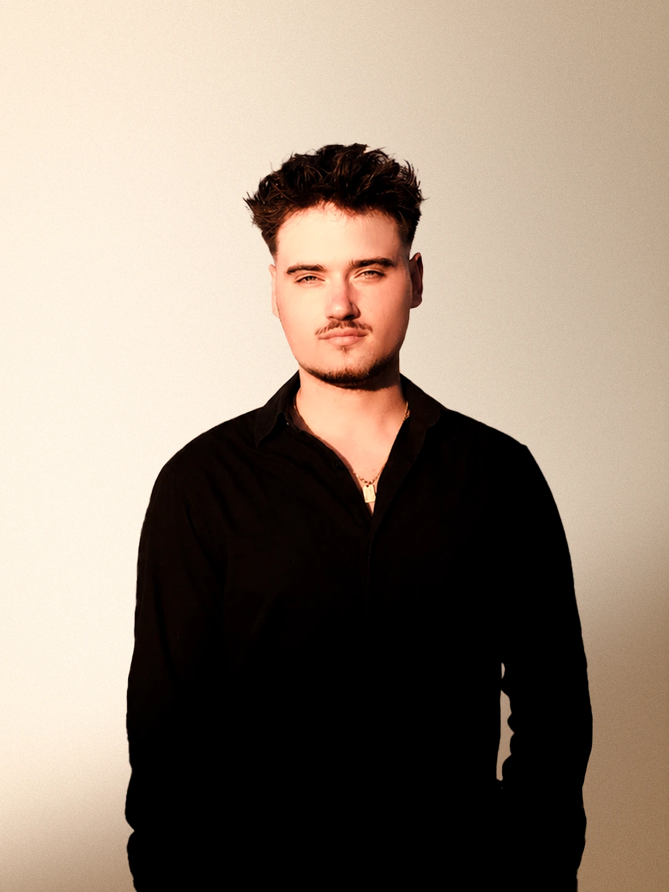

![]()
Réalisé collectivement au sein de Studio Synapse, ce projet autour de l’ONF nous a amenés à questionner les codes de la communication institutionnelle et la manière dont le graphisme peut apporter une dimension plus sensible à la préservation de l’environnement. Notre réflexion s’est construite à partir des traces laissées par la nature et par l’humain, récoltées et observées collectivement pour constituer une matière graphique commune. Voir le projet ONF
Entrez dans mon univers visuel

04
Sillage
Design éditorial · Mémoire
Sillage, entre image et automobile est un mémoire réalisé pour ma dernière année de master en direction artistique, né de ma passion pour l’automobile et de l’envie d’interroger l’évolution de son image. À travers différentes époques, il explore la manière dont le design graphique accompagne les transformations de l’automobile et les enjeux auxquels elle se confronte aujourd’hui : environnement, représentations, place des femmes et responsabilité des marques face à l’avenir. L’objet éditorial prolonge cette réflexion en empruntant directement au langage automobile : une couverture gris métallisé pensée comme une carrosserie, un titre débossé à la manière d’un emblème, et une typographie variable qui évolue de l’empattement vers le sans-serif, en écho à la simplification progressive des identités automobiles. Une trace traverse enfin les trois grandes périodes du mémoire et s’efface peu à peu, jusqu’à disparaître dans la dernière partie. Comme un sillage qui raconte ce que l’automobile laisse derrière elle, tout en questionnant ce qu’il reste encore à écrire. Voir le projet Sillage

02
Malbec
Packaging · Direction artistique
Malbec Coffee est un torréfacteur premium basé à Valanjou, porté par une recherche de qualité et une sélection exigeante de ses cafés. Son identité puise dans l’histoire de son fondateur, marquée dès l’enfance par les voyages et les rencontres, jusqu’aux producteurs avec lesquels il travaille aujourd’hui. Pensé comme un carnet de voyage, l’univers mêle photographie, iconographie et aquarelle pour raconter les territoires, les fermiers et les émotions qui accompagnent chaque café. Sur les packagings, les couleurs et les illustrations évoquent les pays d’origine et les notes propres à chaque référence, comme autant de souvenirs rapportés d’une rencontre. Voir le projet Malbec

01
Arch’ocktail
Direction artistique · Identité visuelle
Archocktail est une marque angevine née de l’association de deux frères et de deux personnalités complémentaires. L’identité s’est construite autour de cette dualité, avec le doseur comme symbole d’équilibre et de précision. Les nuances de vert distinguent subtilement les deux frères, tandis que les illustrations à l’aquarelle apportent une dimension plus artisanale et sensible. Un univers pensé à leur image, entre exigence, prestige, créativité et savoir-faire français dans l’univers de la mixologie. Voir le projet Arch’ocktail

03
Grapillon
Identité visuelle · Packaging
Grapillon est une marque de vin née de la vision d’une vinificatrice au parcours singulier, entre approche scientifique et travail du vivant. Issue d’un DUT en biologie, elle imagine un vin précis et réfléchi, tout en laissant à la nature la liberté de s’exprimer, sans artifice. L’identité traduit cette rencontre à travers un langage graphique où les mots qui caractérisent chaque vin se superposent en ASCII art pour faire naître une image. Sur la bouteille, cette composition se prolonge dans un jeu de deux étiquettes : une première couche gaufrée que l’on déchire pour révéler la matière graphique située en dessous, comme une manière d’entrer à l’intérieur du vin et d’en découvrir toute la personnalité. Voir le projet Grapillon

05
Studio Synapse
Identité visuelle · Direction artistique
Studio Synapse est un collectif de quatre étudiants réuni autour de la création d’identités visuelles. J’ai conçu l’identité du studio dans un univers premium, inspiré par l’exigence et le savoir-faire, afin de s’adresser à des commanditaires haut de gamme. Voir le projet Studio Synapse

Thomas Bonneau
Graphiste et directeur artistique, j’ai suivi un Bachelor en design graphique puis un Master en direction artistique, en parallèle de trois années d’expérience en entreprise. Ce parcours m’a permis de développer ma pratique à travers des projets concrets, de la création d’une identité à son déploiement. Je travaille principalement autour de l’identité de marque et de la communication visuelle, sur des supports imprimés et numériques : édition, affiche, signalétique, conception web et motion design.
-
Studio Synapse
Direction artistique
2025–2026Au sein d’un studio graphique de quatre étudiants, j’ai travaillé pendant un an sur des projets pour de véritables commanditaires, de la réflexion à la création d’identités visuelles.
-
France Boulangerie
Communication et design graphique
2024–2026Pendant deux ans, j’ai conçu des supports de communication pour les adhérents du groupement : réseaux sociaux, affiches, flyers, éditions. J’ai également créé et décliné des identités pour leurs animations commerciales, ainsi que des logos et différents supports selon leurs besoins.
-
Ouest Gravure
Signalétique
2023–2024J’ai principalement travaillé autour de la signalétique, en créant ou déclinant des identités selon les chartes graphiques de différents clients : panneaux directionnels, enseignes, covering de véhicules, totems et habillages graphiques.
-
Illustration
Je dessine depuis toujours, avec un attachement particulier au dessin au graphite. Une pratique qui m’a appris la patience, la précision et l’attention portée aux détails, et qui nourrit encore aujourd’hui ma manière de créer.
-
Automobile
L’automobile me passionne depuis toujours, autant pour l’objet que pour ce qu’elle représente. Son design, son image et la manière dont elle se raconte visuellement nourrissent particulièrement mon travail et mon envie de créer.
-
Sport
Le sport fait également partie de mon quotidien. J’y retrouve une forme d’équilibre, mais aussi cette envie de progresser, de rester constant et d’aller au bout de ce que j’entreprends.
-
Stratégie de marque
Comprendre un projet, son environnement et ce qui le distingue pour définir une direction claire et une manière juste de communiquer.
-
Identité visuelle
Traduire une idée en un langage visuel identifiable, de la direction artistique au logotype, à la typographie et au système graphique, puis le décliner selon les besoins.
-
Print
Déployer une identité sur des supports imprimés, de l’édition à l’affiche, au flyer, à la signalétique et aux différents formats de communication.
-
Digital
Transposer un univers graphique à l’écran à travers la conception web, les interfaces, le motion design et des expériences interactives.
« Une identité naît de ce que l’on choisit de révéler. »
Ce qui m’anime dans le design graphique, c’est de partir d’une histoire, d’une personnalité ou d’un détail pour en révéler quelque chose de singulier. J’aime puiser dans ce qui fait l’ADN d’un projet pour lui donner une voix, une identité et une émotion qui lui appartiennent.
Je crois aussi à un design où le numérique dialogue avec le geste et la matière. Illustration, expérimentation, outils numériques ou intelligence artificielle sont pour moi différentes façons de créer, tant qu’elles restent guidées par une intention et une sensibilité humaines. C’est dans cette rencontre entre savoir-faire, technologie et émotion que j’ai envie de faire évoluer ma pratique.